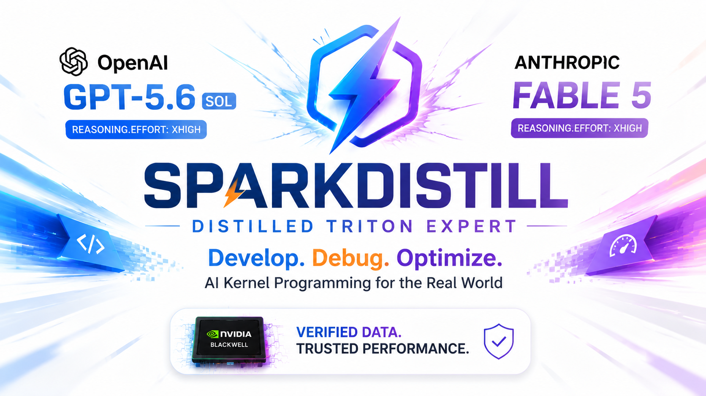

World's first Triton-language-specialized LLM track — engineering faster AI engineeringSPARKDISTILL turns frontier teacher models into small, fast student checkpoints — via trajectory distillation and Axolotl fine-tuning — that sparkinfer serves at the edge on consumer and edge Blackwell GPUs.
A dedicated distillation track that turns TritonBench into a training loop for a Triton-language-specialized LLM — a student model whose whole job is writing and optimizing Triton GPU kernels, so the AI engineering loop around kernel work gets faster end to end.
Targets NVIDIA Blackwell only (workstation SM12x and datacenter SM10x profiles); older architectures are rejected at validation time.
Distilled from GPT 5.6 Sol + Claude Fable 5 teacher trajectories into a dense student sized to iterate fast on Blackwell-class hardware.
Scored against 184 real-world operators (TritonBench-G) and 166 PyTorch-aligned tasks (TritonBench-T) from the TritonBench (ACL 2025 Findings) paper.
Exposed via an OpenAI-compatible API so the distilled kernel expert can sit behind an agentic CLI and write/optimize Triton kernels directly.
sparkinfer makes inference fast; SPARKDISTILL makes the model worth serving fast. Its goal is reasoning distillation: teach a student model to reproduce a teacher's step-by-step reasoning process, not just its final answers.
Prompt a basket of teacher models on reasoning-heavy tasks (multi-step math, logic, proof-style code correctness), capturing chain-of-thought separately from the final response where the provider exposes one.
Fold captured reasoning into the training target as a leading <think>...</think> block — matching Qwen3's native chat template — so the student learns to reason, not just answer.
Axolotl-based SFT/LoRA recipes tuned per student model and per phase, sized for the hardware SparkInfer already targets.
A benchmark harness (BFCL, GSM8K, HumanEval, IFEval, MMLU-Pro, plus AIME and GPQA-Diamond) that scores a student checkpoint against its teacher and the current frontier.
| Path | What |
|---|---|
teacher/ | teacher-trajectory generation — Anthropic (Fable 5) and OpenAI (GPT 5.6) only |
recipes/ | Axolotl training recipes per student model / phase |
eval/ | quality benchmark harness + student-vs-frontier scoring + cheap proof verification |
proof/ | proof-of-training bundle packaging + Hugging Face publishing |
runs/ | immutable ledger of merged, verified runs |
Scoring is quality-only. SN74 pays each merged PR for its verified marginal quality improvement over the current best ("frontier") checkpoint, labeled XL / L / M / S / XS by the deterministic eval loop. Tooling, bench, docs, and refactors are welcome but score 0 unless they produce a verified frontier improvement.
No trained weights are ever the merged artifact. A submission is a recipe + the dataset it was trained on — both fully reproducible from source — plus the eval numbers that resulted from running them.
teacher/generate.py, optionally reformatted for reasoning via teacher/format.py — and a training recipe (an Axolotl sft.yaml under recipes/).scripts/eval.sh).Why share the recipe and dataset instead of just the weights: whoever holds the frontier ("the king") is required to have a fully public recipe + dataset behind their merged checkpoint. Every other miner can fork the current best and try to beat it — "copy the leader and add one optimization" is a valid, expected way to compete.
# 1. install
uv sync
# 2. generate teacher trajectories (needs teacher API keys, see .env.example)
scripts/generate_trajectories.sh --prompts data/prompts/phase1.jsonl --out data/processed/phase1_trajectories.jsonl
# 3. fold captured reasoning into <think>-tagged SFT records (messages format)
scripts/prepare_sft_data.sh --in data/processed/phase1_trajectories.jsonl --out data/processed/phase1_sft.jsonl --format messages
# 4. train the Phase 1 student (Qwen3.5-4B) on those trajectories
scripts/train.sh recipes/qwen3.5-4b-phase1/sft.yaml
# 5. score the resulting checkpoint against the frontier
scripts/eval.sh --checkpoint outputs/qwen3.5-4b-phase1 --compare-frontierA submission's eval claim can skip full retrain-verification if the miner proves it instead of just asserting it — a shortcut for the eval numbers, not a replacement for sharing the recipe + dataset.
scripts/eval.sh).python -m eval.attestation).python -m proof.bundle, python -m proof.publish) — the resulting HF URL is your proof link.python -m eval.verify).runs/ledger.jsonl log, and the new checkpoint becomes the frontier.Unattested submissions still go through the slower path: full retrain-from-source verification.
Prove the trajectory-generation → Axolotl SFT → eval-harness loop end to end on a dense student model that's cheap to iterate on and fits comfortably on RTX PRO 6000 Blackwell-class hardware.
Extend the pipeline to the MoE student model that matches SparkInfer's own MoE decode focus, once Phase 1's loop is proven and the eval basket is stable.
Feed verified frontier checkpoints back into SparkInfer's benchmark and eval-trust pipeline automatically, closing the loop between model quality and serving speed.
Turn a pile of miner-submitted trajectories into a single qualified dataset that can be trusted and combined across contributors — under active design, not yet implemented.
If you are contributing for SN74 rewards, start with the miner guide — it explains what scores, what gets rejected, and the local commands to run before opening a PR. Or dive straight into the source on GitHub.